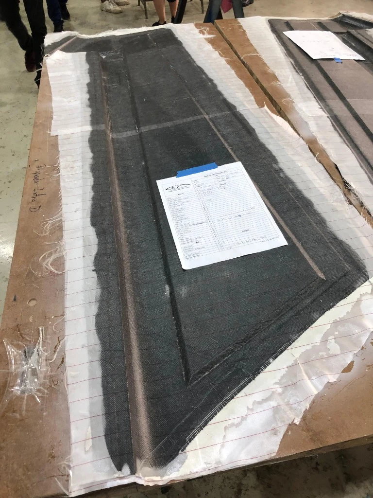
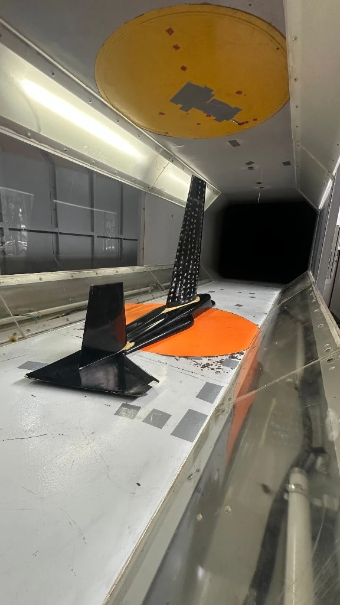
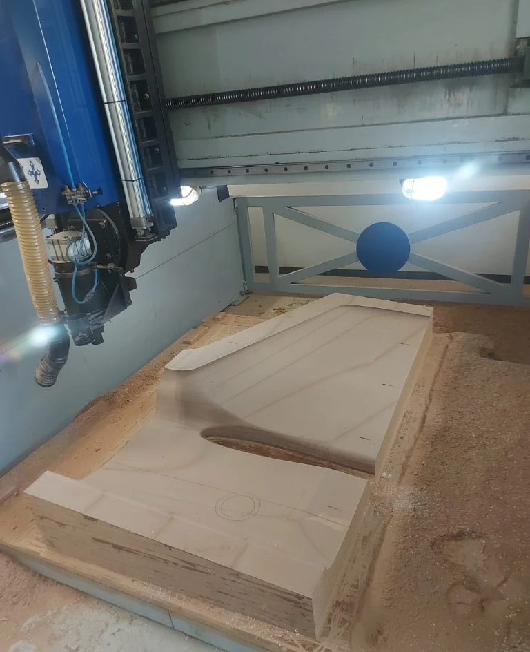
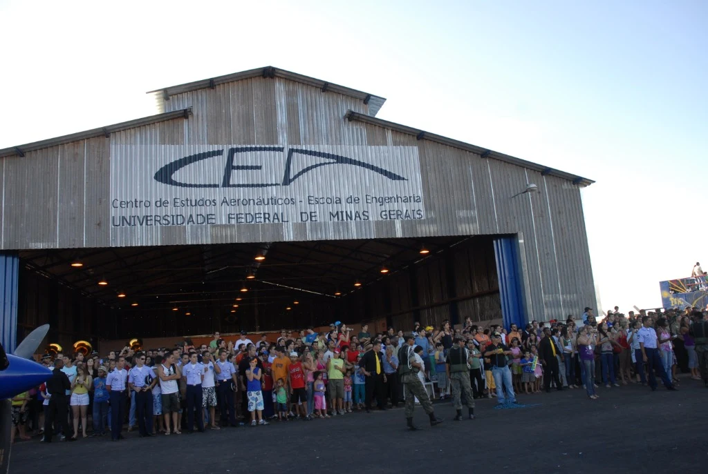
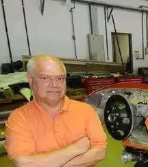
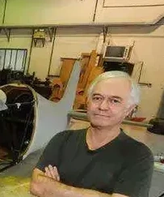
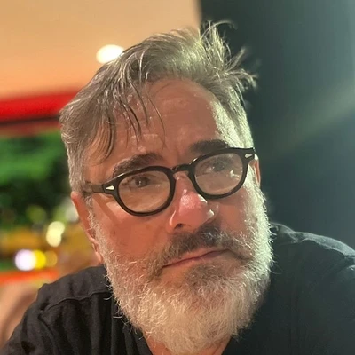

Research & Capabilities
CEA’s engineering experience brings together aircraft design, prototype construction, experimental aerodynamics, instrumentation and flight testing. These activities support research and education through documented projects and experimental infrastructure.
Core Capabilities
Four integrated capabilities linking analytical formulation to physical workshop prototyping, laboratory measurement and flight validation.

Aircraft Design
Conceptual and preliminary design, mission sizing, structural geometry, and advanced numerical analysis (CFD aerodynamic modeling and FEA structural sizing). Demonstrated across CEA's aircraft from early gliders to world-record setting designs.

Prototype Construction
Full airframe manufacturing, bonded metal-to-metal and composite sandwich structures, mold making, vacuum bagging, and precision assembly in CEA's dedicated university workshop. Demonstrated in Gaivota, Minuano, Mehari and Anequim.

Experimental Aerodynamics
Physical flow evaluation in the subsonic wind tunnel (CEA-WT1), multi-hole pressure probe calibration, and boundary-layer investigation. Connects theoretical aeromechanics to measured empirical data.

Flight Testing & Operations
Airborne data acquisition systems (FDAS), pitot arrays, telemetry, and flight envelope expansion. Operated out of the Conselheiro Lafaiete airfield hangar, validating stability derivatives, climb rates, and world-record speeds.
 // AIRFRAME REDESIGN
// AIRFRAME REDESIGN

// CNC TOOLING & MOLDSDedicated university facilities for precision CNC machining, welded tubular airframe redesign, and composite tooling at UFMG.
Prototype Manufacturing & CNC Tooling
CEA’s dedicated on-campus prototyping facility bridges computational aero-structural design and physical flight hardware. Equipped with CNC gantry routers, machine tools (including a Romi Centur 30D CNC lathe), composite laminating benches, and structural welding equipment, the workshop enables complete in-house fabrication, redesign, and structural assembly of experimental aircraft.
Precision CNC Machining & Tooling
Computer-controlled routing and lathe turning for high-accuracy masters, carbon and glass fiber composite molds, and custom hardware fittings.
Airframe Redesign & Welded Structures
Fabrication, aerodynamic redesign, and structural rebuilding of tubular steel fuselages, wing spar mounts, and flight-control mechanisms.
Hands-On Student Engineering
Direct undergraduate and graduate participation in structural fit-checks, cockpit ergonomics, and instrumentation installation beside faculty researchers.

Dedicated flight operations and maintenance facility inaugurated in March 2008 at Conselheiro Lafaiete Airport.
Flight-Test Infrastructure
The inauguration of the Conselheiro Lafaiete Airport hangar in 2008 provided CEA with dedicated university facilities for aircraft assembly, flight testing, maintenance, and airfield operations. In coordination with the Flight Testing and Operations Laboratory, it connects ground preparation with airborne experimental research.
Conselheiro Lafaiete Airfield Hangar
Dedicated runway access, hangarage, and workshop space for prototype integration, pre-flight inspections, and operational campaigns.
Flight Testing & Operations Laboratory
Specialized instrumentation development, sensor calibration arrays, pitot-static probes, and telemetry data systems.
Envelope Expansion & Telemetry
Validating stability derivatives, climb performance, and high-speed envelope limits against theoretical aeromechanical models.
Project-Based Collaboration
Research collaborations are defined around technical objectives, institutional arrangements and the resources required for each project.
Discuss a Research CollaborationCEA Coordination & Collaborating Faculty
Contemporary faculty leadership and collaborating professors directing prototype manufacturing, experimental flight research, and aerospace engineering education at UFMG.

Prof. Joel Laguardia Campos Reis
Coordinator · Aircraft Construction & Development
Coordinates CEA’s physical infrastructure, prototype construction, and experimental flight testing activities. Manages hands-on development programs at the workshop and flight-test hangar, linking accumulated design experience with new research programs and collaboration with Aeromot.

Prof. Luiz Henrique Jorge Machado
Deputy Coordinator · Educational Continuity & Systems
Directs the educational continuity of CEA within UFMG’s Aerospace Engineering undergraduate curriculum. Integrates model-based systems engineering (MBSE), flight test data analysis, student design competition teams, and research partnerships with aerospace industry leaders such as Embraer and Boeing.
Collaborating Professors

Prof. Eduardo Bauzer Medeiros
Structural Dynamics & Aerospace Faculty
Key contributor to CEA's academic curriculum, pioneering advanced structural dynamics, aeroelastic analysis, and mathematical modeling techniques across undergraduate and graduate programs.

Prof. Ricardo Utsch de Freitas Pinto
Former Student & Doctoral Advisor to Cláudio
Educated under Cláudio Barros's early glider projects, Prof. Utsch went on to complete his doctorate and subsequently supervised Prof. Cláudio Barros’s own doctoral thesis on light aircraft design methodology in 2001.

Prof. Carlos Alberto Cimini Jr.
Aircraft Structures & Finite-Element Analysis
Carlos Alberto Cimini Jr. contributed to CEA through aircraft structures, finite-element analysis and student aircraft development. His work included structural analysis on the CEA-308, guidance of the WatchDog UAV project and involvement in AeroDesign activities, connecting computational methods with aircraft design and autonomous-flight research.